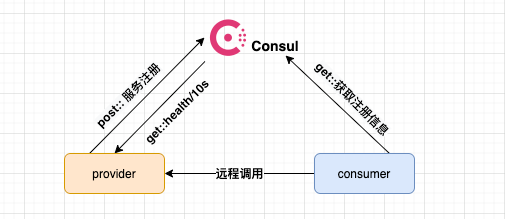
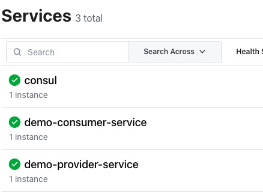
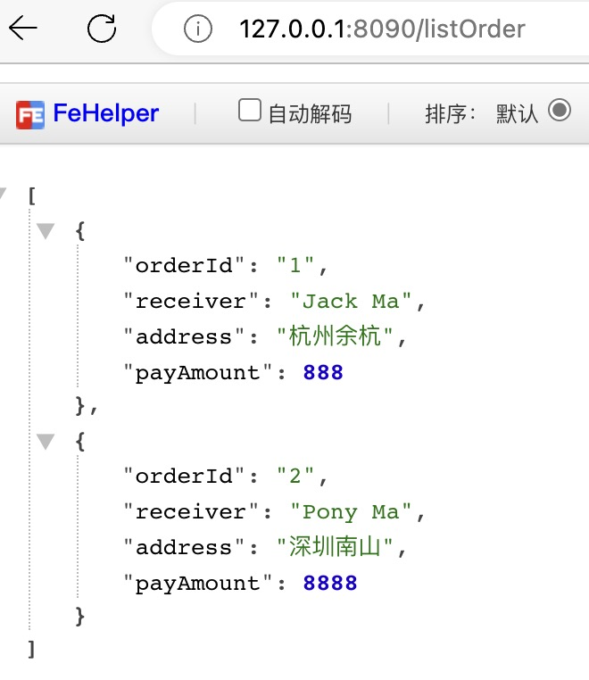

consul实战系列-之二 Consul服务注册和发现功能
在上一篇文章中，我们对consul最了基本减少，然后动手运行一个最简单的单机版本consul，体验了UI功能KV命令使用 这篇文章，我们来介绍consul的服务注册和发现功能和配置中心。通过一个Java的Spring Cloud例子来进行服务注册和发现,Spring Cloud官方已经整合了Consul功能，官方文档 Github代码仓库
服务注册和发现功能准备
注册中心、服务提供者、服务消费者，三种之间关系如图 
服务提供者(provider)启动时讲服务注册到consul，服务消费者(consumer)在进行远程调用时，根据注册中心提供的服务信息，远程调用Provider
下面我们看看spring cloud consul服务注册和服务调用的例子,分成provider和consumer两个工程 pom.xml 引入依赖
<dependency>
<groupId>org.springframework.cloud</groupId>
<artifactId>spring-cloud-starter-consul-discovery</artifactId>
</dependency>
<dependency>
<groupId>org.springframework.cloud</groupId>
<artifactId>spring-cloud-starter-bootstrap</artifactId>
</dependency>
<!-- 不是必须的，主要用actuator提供HTTP健康检测接口 -->
<dependency>
<groupId>org.springframework.boot</groupId>
<artifactId>spring-boot-starter-actuator</artifactId>
</dependency>
Provider端应用代码
Provider应用的application.yml
spring:
application:
name: demo-provider
cloud:
consul:
host: 192.168.31.208 #consul服务IP
port: 8500 #consul HTTP端口
discovery:
instance-id: demo-provider #服务ID
serviceName: ${spring.application.name}-service #服务名称
healthCheckPath: /actuator/health #健康检查URL
healthCheckInterval: 5s #健康检查间隔时间
我们定义一个HTTP接口，输出下discoveryClient.getInstances(SERVICE_NAME)返回的JSON信息
@GetMapping("/listProvider")
@ResponseBody
public List<ServiceInstance> listProvider(){
List<ServiceInstance> list = discoveryClient.getInstances("demo-provider-service");
StringBuffer sb = new StringBuffer();
if(list != null && list.size() > 0 ) {
ServiceInstance si = list.get(0);
String info = String.format("host=%s,port=%d,ServiceId=%s,InstanceId=%s \n", si.getHost(),si.getPort(),si.getServiceId(),si.getInstanceId());
sb.append(info);
System.out.println(si);
}
return list;
}
另外定义一个HTTP接口，用来演示consumer调用
@GetMapping("/listOrder")
@ResponseBody
public List<Order> listOrder(){
List<Order> orderList = new ArrayList<>();
Order order1 = new Order("1","Jack Ma","杭州余杭",new BigDecimal("888.00"));
Order order2 = new Order("2","Pony Ma","深圳南山",new BigDecimal("8888.00"));
orderList.add(order1);
orderList.add(order2);
return orderList;
}
启动Provider端，我们看到日志里如下信息
Registering service with consul: NewService{id='demo-provider', name='demo-provider-service', tags=[], address='XXXXX', meta={secure=false}, port=8080, enableTagOverride=null, check=Check{script='null', dockerContainerID='null', shell='null', interval='5s', ttl='null', http='http://XXXXXX:8080/actuator/health', method='null', header={}, tcp='null', timeout='null', deregisterCriticalServiceAfter='null', tlsSkipVerify=null, status='null', grpc='null', grpcUseTLS=null}, checks=null}
从日志中可以看到我们在yaml文件里配置的注册信息，已经当前运行节点实例信息
Consumer端代码
pom.xml跟Provider端一样，这里不重复
Consumer应用的application.yml
spring:
application:
name: demo-consumer
cloud:
consul:
host: 192.168.31.208
port: 8500
discovery:
instance-id: demo-consumer
serviceName: ${spring.application.name}-service
healthCheckPath: /actuator/health
healthCheckInterval: 5s
server:
port: 8090 #在本机跑，单独设置一个端口
编写一个Controller方法，调用Provider方法，这里调用
@Autowired
RestTemplate restTemplate;
@GetMapping("/listOrder")
@ResponseBody
public List<Order> listOrder(){
//注册直接通过服务名"demo-provider-service" 直接访问
ResponseEntity<List> forEntity = restTemplate.getForEntity("http://demo-provider-service/listOrder", List.class);
if(forEntity != null) {
return forEntity.getBody();
} else{
return new ArrayList<>();
}
}
其中listOrder方法使用到的RestTemplate类Bean实例化代码如下
@Configuration
@ComponentScan
public class BeanConfiguration {
@LoadBalanced
@Bean
public RestTemplate loadbalancedRestTemplate() {
return new RestTemplate();
}
}
两个应用启动后，用命令consul catalog services -http-addr=http://192.168.31.208:8500 查看已注册的服务
注意-http-addr默认值为http://127.0.0.1:8500,如果consul catalog执行命令集群和consul agent server在同一台机器上，不需要加-http-addr参数
已注册服务如下:
- consul
- demo-consumer-service
- demo-provider-service
通过Web UI /192.168.31.208:8500 可以看到注册服务如下图 
我们访问本地demo-consumer应用的listOrder http://127.0.0.1:8090/listOrder
可以看到输出的JSON信息
